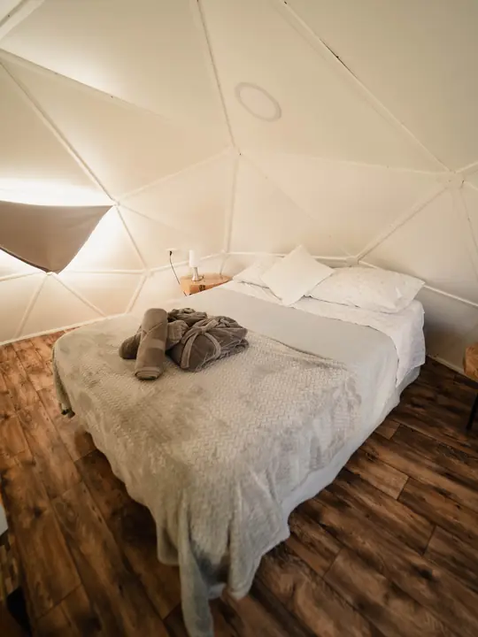
Dormir bajo la cúpula
Dormitorio con cama matrimonial en el segundo piso, con ventanas triangulares que miran al cielo de Aysén.
AltilloReservar
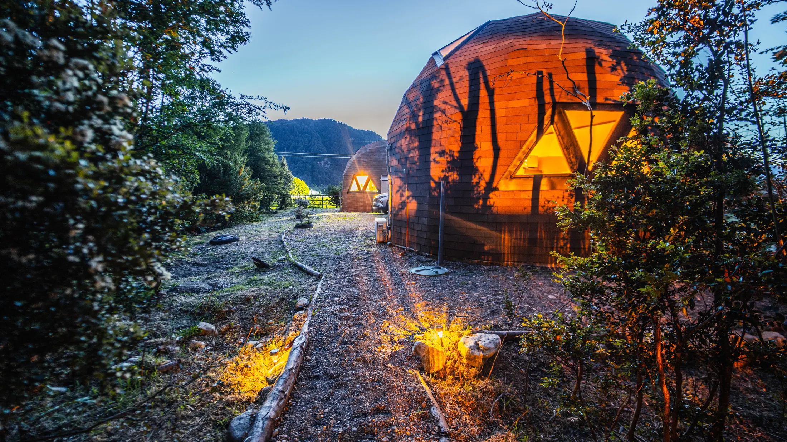
Domos & tinaja en la Patagonia
Domos totalmente equipados a 10 minutos de Puerto Aysén, a orillas de la Ruta 240 y rodeados de bosque, cerros y silencio.
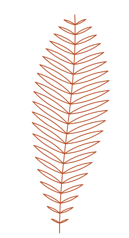
Bienvenidos a Domotel
En Domotel Aysén vives la experiencia de descansar mirando el cielo de la Patagonia, a pasos de la Ruta 240 que une Puerto Aysén con Coyhaique. Nuestros domos están totalmente equipados para que disfrutes de las comodidades de tu hogar, rodeado de naturaleza y con vistas a la montaña.
Somos Marlene y Gerald, y te recibimos personalmente. En el domo encontrarás nuestras recomendaciones de lugares para comer y conocer a 20 o 30 minutos, para que aproveches al máximo los paisajes de la región.
EscríbenosAquí el ruido se queda en la carretera. Adentro solo hay bosque, lluvia y calma.
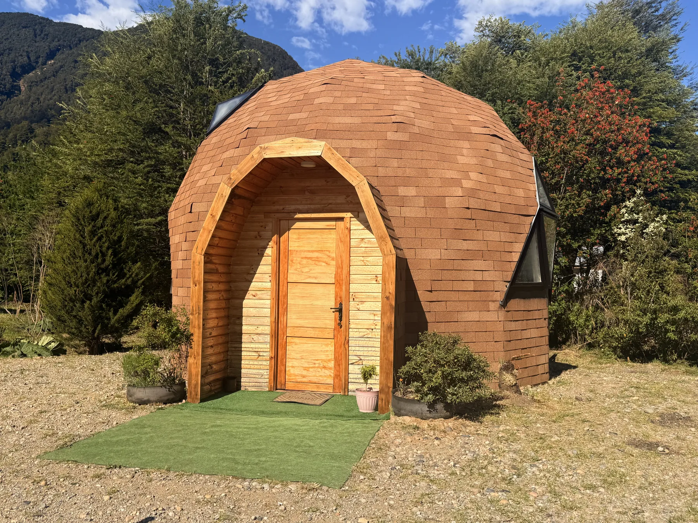
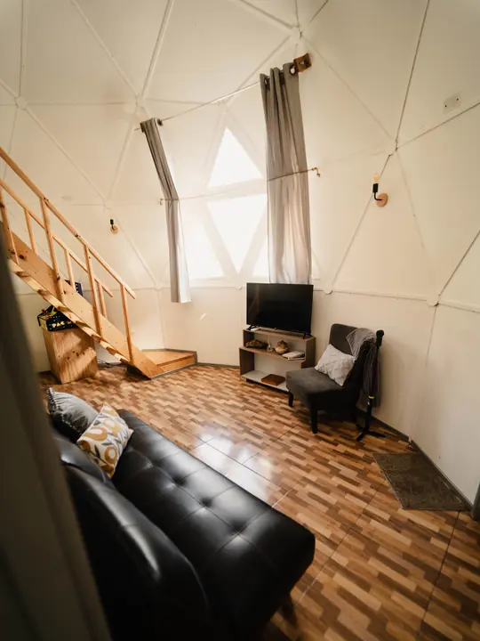
Lo que te espera

Dormitorio con cama matrimonial en el segundo piso, con ventanas triangulares que miran al cielo de Aysén.
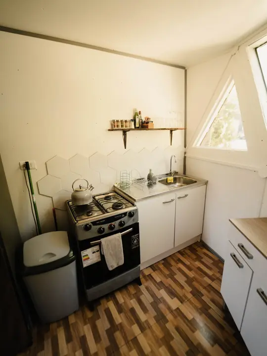
Horno, cocina, microondas, refrigerador, tostadora, tetera y todo el menaje para cocinar como en casa.
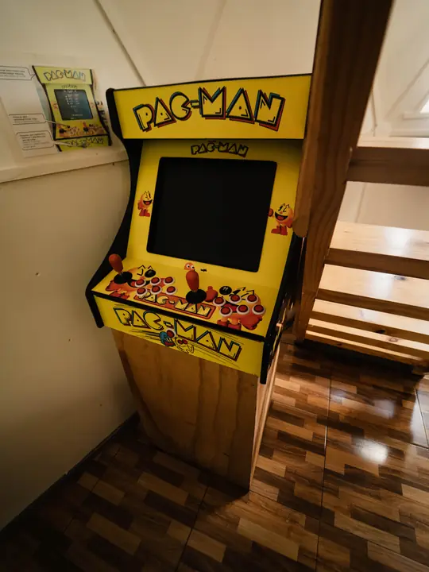
Máquina arcade con clásicos como Pac-Man, Donkey Kong y Super Mario, más juegos de mesa para grandes y chicos.
Tour virtual 360°
Muévete por el living, la cocina, el altillo y el exterior como si ya estuvieras aquí. Arrastra para mirar alrededor y usa las miniaturas para cambiar de espacio.
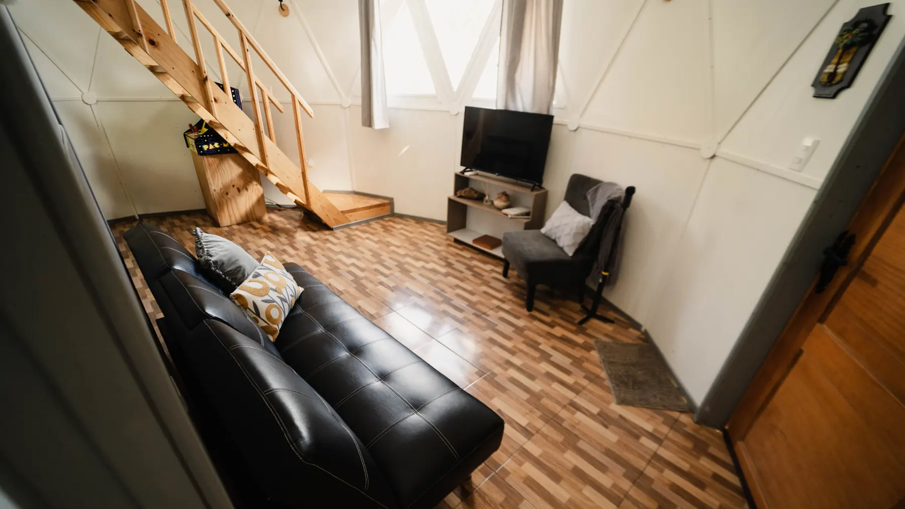
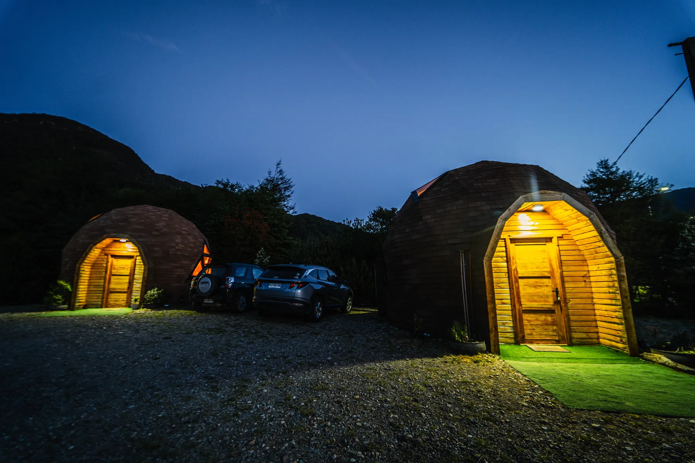
Un momento para ti
La naturaleza no se apura, y sin embargo todo se cumple.
Lao Tse
Descansar no es perder el tiempo: es volver a encontrarlo.
Apaga el ruido. Escucha la lluvia sobre el domo.
En la Patagonia, el silencio también es un paisaje.
Desconéctate un rato. El bosque se encarga del resto.
El domo en detalle
Cama matrimonial en el segundo piso, bajo la cúpula. Se accede por una escalera interior de madera.
Sofá que se transforma en cama nido cuando la reserva es para 4 personas. Ideal para familias.
Ducha con agua caliente, secador de pelo, toallas y artículos de aseo.
Horno, cocina, microondas, refrigerador, tostadora, tetera, vajilla completa y mesa para cuatro.
Domo independiente de dos niveles, con entrada privada y mucha luz natural.
Patio y jardín con vista a la montaña, rodeado de flores silvestres y bosque nativo.
Conexión inalámbrica en todo el domo, para trabajar o compartir tus fotos del viaje.
Aire acondicionado split que calefacciona en invierno y refresca en verano.
Televisor HD con Netflix y Roku para las noches de lluvia patagónica.
Máquina arcade y juegos de mesa: entretención para adultos y niños.
Sábanas, cobertores y toallas para toda tu estadía.
Estacionamiento privado junto al domo, sin necesidad de reservar.
Desde las 16:00. Coordina tu hora de llegada por WhatsApp y te esperamos.
Salida hasta las 12:00 del mediodía.
Domos para 2 y 4 personas. Se aceptan niños de todas las edades.
Lamentablemente no se admiten mascotas.
Está prohibido fumar dentro del domo.
Es un lugar para descansar: no se permiten fiestas ni eventos.
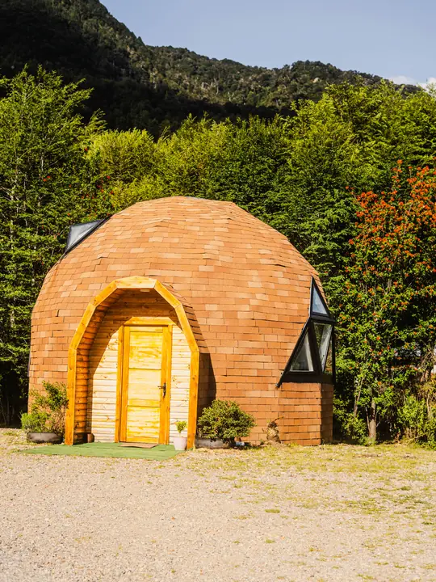
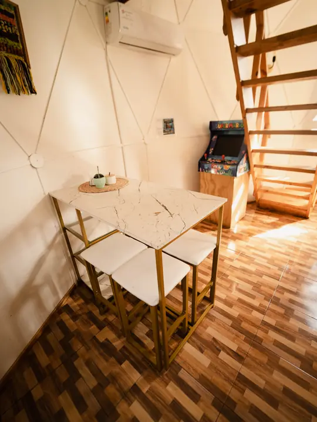
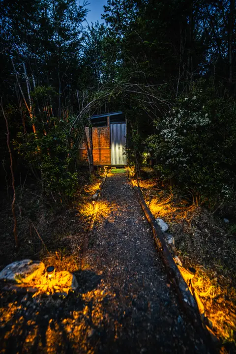
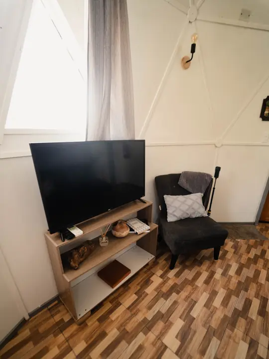
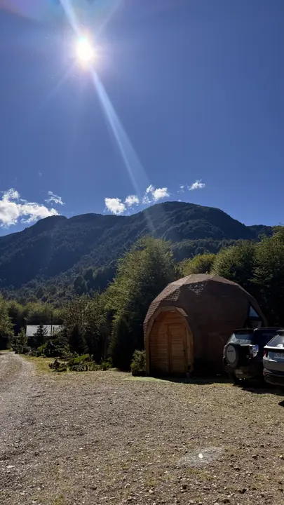
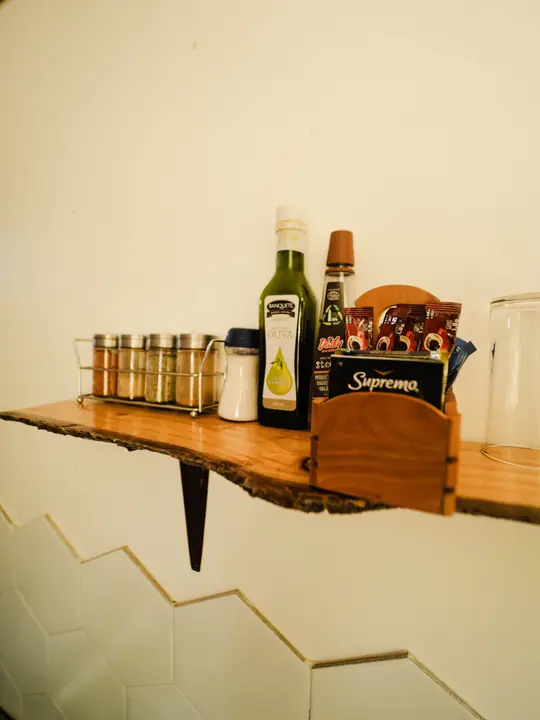
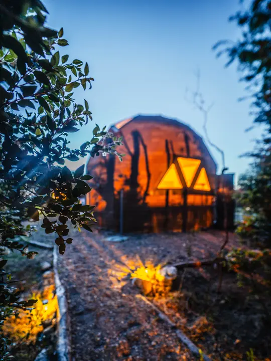
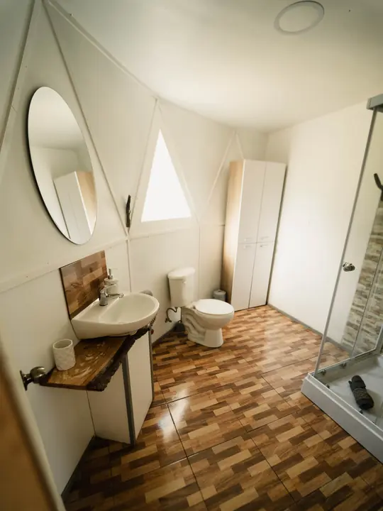
Tinaja caliente
Después de recorrer la región, nada mejor que meterse a la tinaja con una copa de vino, rodeado de bosque y del silencio de la Patagonia. Está en una terraza techada a pasos de los domos, para disfrutarla aunque llueva.
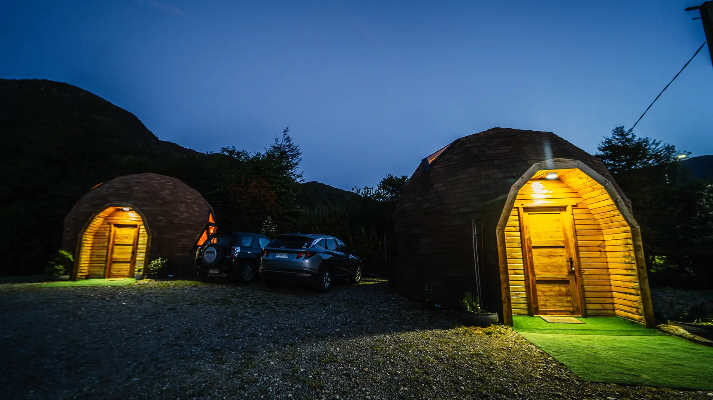
Reservas
Reserva directo con nosotros por WhatsApp, sin intermediarios. Cuéntanos tus fechas y te respondemos con disponibilidad y valores.
Galería
Escríbenos directamente por WhatsApp al +56 9 8363 0133 indicando tus fechas y el número de huéspedes. Te confirmamos disponibilidad y valores, sin intermediarios. También puedes usar el formulario de reserva.
Tenemos domos para 2 y 4 personas. El dormitorio del segundo piso tiene cama matrimonial y, cuando la reserva es para 4, el sofá del living se transforma en cama nido. Indícanos cuántas camas necesitas al reservar.
En la Ruta 240, km 14, a 10 minutos de Puerto Aysén y a orillas del camino Aysén–Coyhaique. A 2 minutos hacia Coyhaique hay un minimarket y a 2 minutos hacia Aysén un local de comida rápida.
El check-in es desde las 16:00 y el check-out hasta las 12:00. Si vas a llegar tarde, avísanos por WhatsApp y coordinamos tu llegada.
Sí. Cuenta con aire acondicionado split frío/calor, que mantiene el domo templado en invierno y fresco en los días de verano.
La tinaja de agua caliente se reserva de forma adicional a tu estadía. Pídela por WhatsApp junto con tu reserva y la dejamos agendada para ti.
No se admiten mascotas. Tampoco se permite fumar ni realizar fiestas o eventos.
El dormitorio está en el segundo piso y se accede por una escalera interior de madera, por lo que puede no ser cómodo para personas con movilidad reducida. Escríbenos y vemos la mejor opción para ti.
Gracias a la conexión con la Ruta 240 puedes recorrer fácilmente Puerto Aysén, Puerto Chacabuco y muchos de los paisajes más lindos de la región. En el domo te dejamos una lista de lugares para comer y conocer, y siempre estamos disponibles para darte datos.
Reseñas
Extractos de reseñas reales publicadas en Booking.com y Airbnb (algunas abreviadas). Las indicadas como traducidas fueron traducidas automáticamente por la plataforma.
Ubicación
Estamos en la Ruta 240, km 14, a orillas del camino entre Puerto Aysén y Coyhaique. Una base perfecta para recorrer la región, con todo a mano.
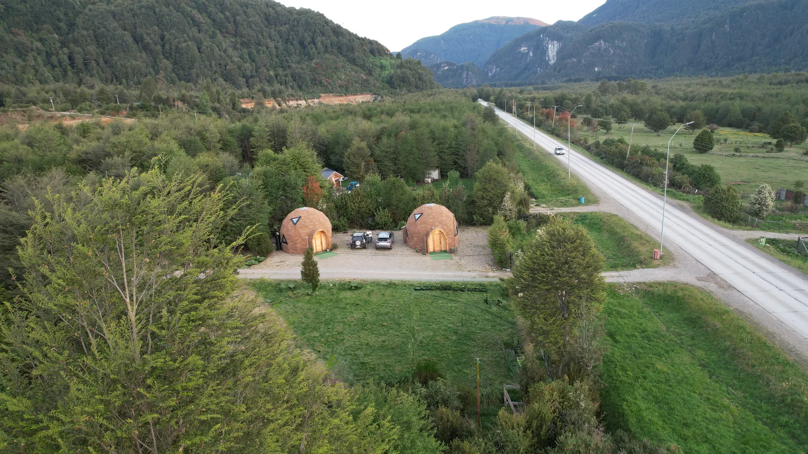
Toma la Ruta 240 en dirección a Coyhaique. En el km 14 verás los domos y el letrero de Domotel en la entrada.
Sigue la Ruta 240 hacia Puerto Aysén. Estamos 14 km antes de llegar a la ciudad, a orillas del camino.
Ve hacia Coyhaique y desde ahí toma la Ruta 240 rumbo a Puerto Aysén hasta el km 14.
Si llegas de noche o tienes dudas, escríbenos por WhatsApp y te guiamos.